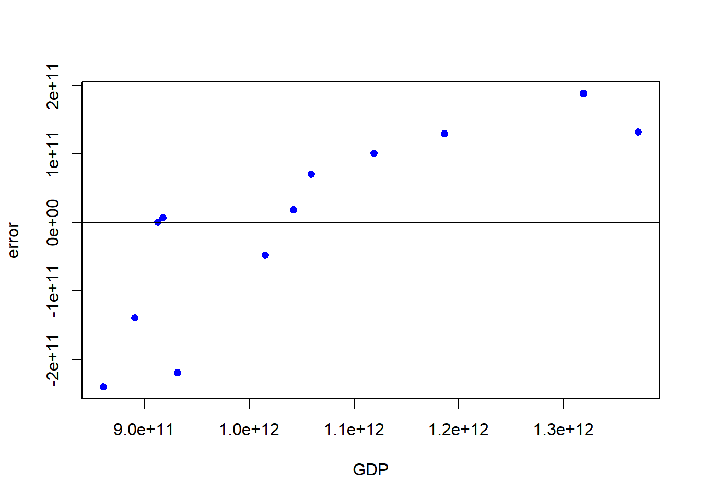
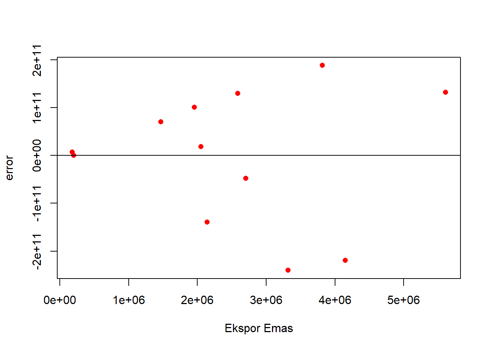
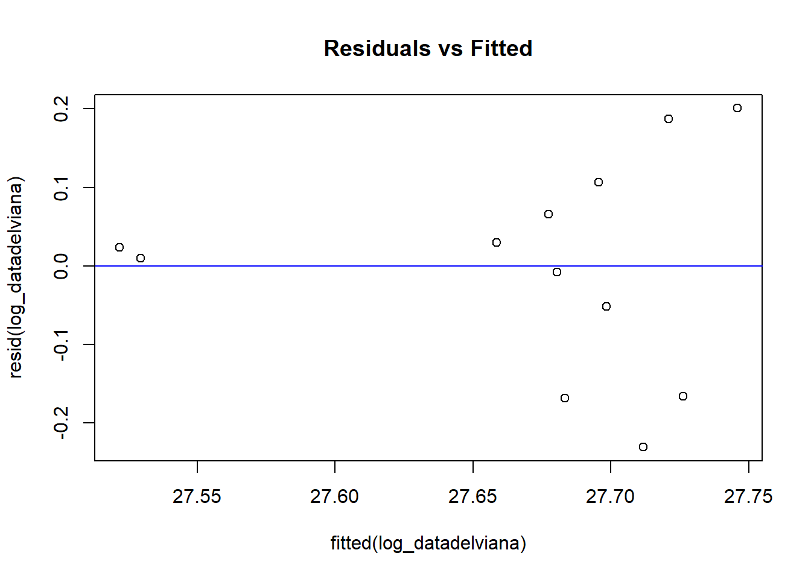

library(tidyverse)
library(readxl)
library(WDI)Pengaruh Ekspor Emas terhadap GDP Indonesia Tahun 2012 hingga 2023
Metode Penelitian Politeknik APP Jakarta

1 Pendahuluan
1.1 Latar belakang
Ekspor emas telah menjadi salah satu komponen penting dalam perekonomian Indonesia, memberikan kontribusi signifikan terhadap Produk Domestik Bruto (GDP). Indonesia berkembang menjadi salah satu produsen dan eksportir emas terbesar di dunia, menempati posisi strategis di kawasan ASEAN. Peran emas dalam ekonomi Indonesia sangat luas, mulai dari digunakan sebagai alat investasi, cadangan devisa, hingga standar keuangan. Selain itu, emas juga menyediakan sumber pendapatan devisa yang substansial bagi negara.Tren positif ekspor emas Indonesia terlihat jelas dengan kontribusi yang signifikan terhadap total nilai ekspornya. Produk emas bahkan menjadi penyumbang terbesar kedua setelah minyak dan gas, menunjukkan betapa besar perannya dalam struktur perdagangan nasional. Dengan demikian, sektor emas bukan hanya sekadar sumber pendapatan devisa, tetapi juga sebagai pendorong pertumbuhan ekonomi secara lebih luas.
Ekspor memiliki dampak langsung terhadap GDP melalui peningkatan penerimaan negara. Proporsi komponen ekspor dalam perhitungan GDP mengalami peningkatan dari waktu ke waktu, mencerminkan kontribusi signifikan dari sektor ini terhadap pertumbuhan ekonomi. Kenaikan permintaan global untuk emas, terutama dari negara-negara seperti Singapura dan Hong Kong, turut mendorong daya saing produk emas Indonesia agar lebih tinggi. Namun, ada beberapa faktor yang mempengaruhi ekspor emas Indonesia. Kondisi ekonomi global, permintaan pasar internasional, dan daya saing produk merupakan aspek yang harus dipertimbangkan. Analisis menggunakan metode Revealed Comparative Advantage (RCA) menunjukkan bahwa produk emas Indonesia memiliki daya saing yang baik di pasar global, terutama di negara-negara tujuan utama seperti Singapura dan Australia. Meskipun begitu, masih ada tantangan di pasar Jepang di mana daya saing produk emas Indonesia relatif rendah.
Dari analisis tersebut, dapat disimpulkan bahwa ekspor emas memiliki pengaruh yang signifikan terhadap GDP Indonesia. Untuk memaksimalkan potensi pertumbuhan ekonomi melalui sektor ini, transformasi kebijakan dan peningkatan infrastruktur serta sumber daya manusia menjadi kunci. Dengan strategi yang tepat, diharapkan kontribusi sektor emas terhadap perekonomian nasional akan semakin meningkat seiring dengan perkembangan pasar global. Oleh karena itu, penting bagi pemerintah dan industri terkait untuk terus memantau dan meningkatkan efektivitas operasional sehingga bisa menjawab tuntutan pasar dan meningkatkan nilai tambah nasional.
1.2 Ruang lingkup
Penulis dalam penelitian ini mengumpulkan data ekspor emas melalui laporan tahunan Badan Pusat Statistik (BPS) Indonesia untuk periode 2012 hingga 2023. Selain itu, data Produk Domestik Bruto (GDP) Indonesia diperoleh dari sumber internasional seperti World Bank. Penelitian ini menggunakan dua variabel, yaitu variabel X (ekspor emas) dan variabel Y (GDP Indonesia). Data yang digunakan bersifat time series dan mencakup periode 2012 hingga 2023.
1.3 Rumusan masalah
Penelitian ini akan menjawab persoalan mengenai:
- Seberapa besar kontribusi ekspor emas terhadap pertumbuhan GDP Indonesia?
- Apa saja faktor yang mempengaruhi ekspor emas Indonesia di pasar internasional?
- Bagaimana daya saing produk emas Indonesia dibandingkan dengan negara eksportir lainnya?
- Apa tantangan yang dihadapi Indonesia dalam mempertahankan posisi sebagai eksportir emas?
1.4 Tujuan dan manfaat penelitian
Tujuan penelitian ini dirumuskan untuk memberikan manfaat bagi pemerintah dan masyarakat, dengan fokus pada pengembangan sektor ekspor emas dan dampaknya terhadap perekonomian Indonesia:
1. Bagi Pemerintah Memberikan rekomendasi kebijakan yang berbasis data untuk meningkatkan kinerja ekspor emas dan kontribusinya terhadap GDP Indonesia. Mengidentifikasi strategi yang dapat digunakan pemerintah untuk mengoptimalkan pemanfaatan sumber daya emas, sehingga dapat mendukung pertumbuhan ekonomi yang berkelanjutan.
2. Bagi Masyarakat Meningkatkan kesadaran publik mengenai peran ekspor emas dalam perekonomian nasional dan dampaknya terhadap kesejahteraan masyarakat. Mendorong partisipasi masyarakat dalam proses pengambilan keputusan terkait kebijakan energi dan pertambangan, dengan memahami implikasi dari kebijakan tersebut terhadap kehidupan sehari-hari mereka.
1.5 Package
Packages yang digunakan antara lain sebagai berikut:
2 Studi pustaka
Penelitian ini membahas berbagai aspek terkait ekspor emas Indonesia, dengan fokus pada kontribusinya terhadap pertumbuhan GDP, faktor-faktor yang mempengaruhi ekspor, daya saing produk emas, dan tantangan yang dihadapi dalam mempertahankan posisi sebagai eksportir. Ekspor emas telah menjadi salah satu komponen penting dalam perekonomian Indonesia, di mana Indonesia dikenal sebagai salah satu produsen dan eksportir emas terbesar di dunia. Data dari Badan Pusat Statistik menunjukkan bahwa ekspor logam mulia dan perhiasan mengalami tren penguatan yang sejalan dengan peningkatan harga emas di pasar internasional. Hal ini mencerminkan potensi besar sektor emas dalam memberikan kontribusi signifikan terhadap nilai ekspor nasional.
Fluktuasi harga emas di pasar global menjadi faktor kunci yang mempengaruhi kinerja ekspor emas Indonesia. Penelitian menunjukkan bahwa ketidakpastian harga dapat memengaruhi keputusan investasi dan produksi di sektor ini, serta berdampak pada pendapatan negara. Kontrak jangka panjang sering kali diadopsi sebagai strategi untuk menjamin stabilitas pendapatan, meskipun ada risiko terkait fluktuasi harga pasar. Selain itu, analisis daya saing produk emas Indonesia menggunakan metode Revealed Comparative Advantage (RCA) menunjukkan bahwa produk emas Indonesia memiliki daya saing yang baik di pasar global, terutama di negara-negara tujuan utama seperti Singapura dan Australia. Namun, tantangan tetap ada, terutama di pasar Jepang di mana daya saing produk emas Indonesia relatif rendah.
Faktor-faktor yang mempengaruhi ekspor emas mencakup kondisi ekonomi global, permintaan pasar internasional, serta kebijakan perdagangan yang diterapkan oleh pemerintah. Penelitian sebelumnya mengindikasikan bahwa GDP per kapita negara tujuan ekspor memiliki pengaruh signifikan terhadap permintaan ekspor emas Indonesia. Oleh karena itu, penting bagi pemerintah untuk terus memantau dan menyesuaikan kebijakan perdagangan guna meningkatkan daya saing produk emas.Tantangan lain yang dihadapi Indonesia dalam mempertahankan posisinya sebagai eksportir emas meliputi keterbatasan infrastruktur dan distribusi. Infrastruktur yang ada saat ini masih sangat terbatas, sehingga distribusi produk tidak merata di berbagai wilayah. Keterbatasan ini menyulitkan pemenuhan kebutuhan domestik dan menghambat potensi ekspor. Untuk mengatasi tantangan ini, pemerintah perlu meningkatkan investasi dalam infrastruktur dan mendukung pengembangan industri terkait.
Secara keseluruhan, penelitian ini menyoroti pentingnya memahami dinamika pasar emas serta tantangan yang dihadapi Indonesia dalam mempertahankan posisinya sebagai eksportir. Penelitian lebih lanjut diperlukan untuk mengeksplorasi strategi yang dapat meningkatkan daya saing sektor emas Indonesia sambil memastikan keberlanjutan pasokan energi bagi masyarakat domestik. Dengan demikian, rekomendasi kebijakan berbasis data dapat membantu meningkatkan kinerja ekspor emas dan kontribusinya terhadap pertumbuhan ekonomi nasional.
3 Metode penelitian
3.1 Data
penelitian ini menggunakan data time series yang diperoleh dari Badan Pusat Statistik dan Worldbank dalam kurun waktu 2012 hingga 2023, dan didapatkan data sebagai berikut:
| TAHUN | Ekspor Emas | GDP Indonesia |
|---|---|---|
| 2012 | $179,322.70 | $917869913332.649 |
| 2013 | $202,011.40 | $912524136718.018 |
| 2014 | $2,143,486.20 | $890814755533.537 |
| 2015 | $3,319,933.40 | $860854232686.214 |
| 2016 | $4,148,902.40 | $931877364037.698 |
| 2017 | $2,700,392.50 | $1015618744159.73 |
| 2018 | $2,050,413.30 | $1042271532988.63 |
| 2019 | $1,957,708.50 | $1119099871350.2 |
| 2020 | $1,468,661.50 | $1059054842698.48 |
| 2021 | $2,585,627.90 | $1186509691086.73 |
| 2022 | $3,817,525.40 | $1319076267310.16 |
| 2023 | $5,607,131.20 | $1371171152331.16 |
setwd("C:/metopendelviana")
datadelviana <- read_excel("datadelviana.xlsx")
library(readxl)
reg2<-lm(data=datadelviana,Y~X)
summary(reg2)
Call:
lm(formula = Y ~ X, data = datadelviana)
Residuals:
Min 1Q Median 3Q Max
-2.400e+11 -7.060e+10 1.248e+10 1.079e+11 1.881e+11
Coefficients:
Estimate Std. Error t value Pr(>|t|)
(Intercept) 9.002e+11 8.192e+10 10.988 6.66e-07 ***
X 6.045e+04 2.795e+04 2.163 0.0559 .
---
Signif. codes: 0 '***' 0.001 '**' 0.01 '*' 0.05 '.' 0.1 ' ' 1
Residual standard error: 1.457e+11 on 10 degrees of freedom
Multiple R-squared: 0.3187, Adjusted R-squared: 0.2505
F-statistic: 4.677 on 1 and 10 DF, p-value: 0.05586Plot Pengaruh Error Terhadap GDP
library(readxl)
datadelviana$m<-resid(reg2)
plot(datadelviana$Y,datadelviana$m,xlab="GDP",ylab="error",col='blue',pch=16)
abline(h=0)
Plot menunjukkan pola residual terhadap GDP. Terdapat tren yang dapat dilihat (peningkatan residual dengan nilai GDP), yang menunjukkan kemungkinan pelanggaran asumsi homogenitas varians (heteroskedastisitas).
Plot Pengaruh Error Terhadap GDP
library(readxl)
datadelviana$m<-resid(reg2)
plot(datadelviana$X,datadelviana$m,xlab="Ekspor Emas",ylab="error",col='red',pch=16)
abline(h=0)
Plot menunjukkan distribusi residual terhadap variabel bebas (X). Residual tersebar secara acak tanpa pola tertentu, tetapi terdapat outlier yang signifikan (residual besar). Hal ini menunjukkan bahwa model mungkin tidak sepenuhnya sesuai untuk menjelaskan hubungan antara ekspor emas dan GDP.
Maka Saya perlu melakukan uji formal, seperti Breusch-Pagan Test, untuk memastikan keberadaan heteroskedastisitas.
library(lmtest)
bptest(reg2)
studentized Breusch-Pagan test
data: reg2
BP = 4.5427, df = 1, p-value = 0.03306Hasil uji Studentized Breusch-Pagan menunjukkan nilai BP sebesar 4.5427 dengan p-value 0.03306. Karena p-value lebih kecil dari 0.05, saya menolak hipotesis nol dan menyimpulkan bahwa terdapat heteroskedastisitas dalam model. Untuk mengatasinya, saya mencoba melakukan transformasi data sebagai berikut :
datadelviana$log_Y <- log(datadelviana$Y)
datadelviana$log_X <- log(datadelviana$X)
log_datadelviana <- lm(log_Y ~ log_X, data = datadelviana)
summary(log_datadelviana)
Call:
lm(formula = log_Y ~ log_X, data = datadelviana)
Residuals:
Min 1Q Median 3Q Max
-0.23055 -0.08028 0.01674 0.07628 0.20083
Coefficients:
Estimate Std. Error t value Pr(>|t|)
(Intercept) 26.73440 0.56267 47.513 4.11e-13 ***
log_X 0.06509 0.03901 1.669 0.126
---
Signif. codes: 0 '***' 0.001 '**' 0.01 '*' 0.05 '.' 0.1 ' ' 1
Residual standard error: 0.1429 on 10 degrees of freedom
Multiple R-squared: 0.2178, Adjusted R-squared: 0.1396
F-statistic: 2.784 on 1 and 10 DF, p-value: 0.1261plot(fitted(log_datadelviana), resid(log_datadelviana), main = "Residuals vs Fitted")
abline(h = 0, col = "blue")
library(dplyr)
datadelviana<- datadelviana%>%
select(-X, -Y)
library(knitr)
kable(datadelviana)| TAHUN | m | log_Y | log_X |
|---|---|---|---|
| 2012 | 6834060892 | 27.54532 | 12.09694 |
| 2013 | 116797308 | 27.53948 | 12.21608 |
| 2014 | -138950889550 | 27.51540 | 14.57794 |
| 2015 | -240025315140 | 27.48119 | 15.01546 |
| 2016 | -219111717683 | 27.56047 | 15.23835 |
| 2017 | -47810783549 | 27.64652 | 14.80891 |
| 2018 | 18131960337 | 27.67242 | 14.53355 |
| 2019 | 100564120213 | 27.74355 | 14.48729 |
| 2020 | 70081013928 | 27.68840 | 14.19986 |
| 2021 | 130017456104 | 27.80204 | 14.76548 |
| 2022 | 188118268794 | 27.90795 | 15.15511 |
| 2023 | 132035028345 | 27.94669 | 15.53955 |
shapiro.test(resid(log_datadelviana))
Shapiro-Wilk normality test
data: resid(log_datadelviana)
W = 0.95131, p-value = 0.6562Berdasarkan hasil uji normalitas Shapiro-Wilk, nilai W sebesar 0.95131 dengan p-value 0.6562. Karena p-value jauh lebih besar dari tingkat signifikansi 0.05, saya tidak memiliki cukup bukti untuk menolak hipotesis nol, yang menyatakan bahwa data residual berdistribusi normal. Dengan demikian, saya dapat menyimpulkan bahwa residual dari model yang telah ditransformasi log berdistribusi normal. Hal ini menunjukkan bahwa asumsi normalitas residual dalam analisis regresi telah terpenuhi, sehingga model dapat diandalkan untuk analisis statistik lebih lanjut.
3.2 Metode analisis
Metode yang dipilih adalah regresi univariat atau Ordinary Least Square (OLS) dengan 1 variabel independen. Penelitian ini merbaksud mencari hubungan antara Ekspor Emas dan GDP. Spesifikasi yang dilakukan adalah:
\[ y_{t}=\beta_0 + \beta_1 x_t+\mu_t \] di mana \(y_t\) adalah GDP dan \(x_t\) adalah Ekspor Emas.
4 Pembahasan
4.1 Pembahasan masalah
Regresi yang telah dilakukan, menghasilkan data sebgai berikut:
| variable | Coefficients |
|---|---|
| Intercept | 26.73440 |
| X | 0.06509 |
| p-value | 0.1261 |
| Multiple R-squared | 0.2178 |
| Adjusted R-squared | 0.1396 |
Didapatkan metode regresi univariat sebagai berikut:
\[ y_{t}=\ (26.73440) + \ (0.06509)+\mu_t \] Ini berarti bahwa ketika ekspor emas meningkat sebesar 1 unit (X), Produk Domestik Bruto (GDP) Indonesia (Y) diperkirakan meningkat sebesar 0.06509 dengan konstanta 26.73440.
4.2 Analisis masalah
Hasil regresinya adalah
reg2<- lm(log_Y ~ log_X, data = datadelviana)
summary(reg2)
Call:
lm(formula = log_Y ~ log_X, data = datadelviana)
Residuals:
Min 1Q Median 3Q Max
-0.23055 -0.08028 0.01674 0.07628 0.20083
Coefficients:
Estimate Std. Error t value Pr(>|t|)
(Intercept) 26.73440 0.56267 47.513 4.11e-13 ***
log_X 0.06509 0.03901 1.669 0.126
---
Signif. codes: 0 '***' 0.001 '**' 0.01 '*' 0.05 '.' 0.1 ' ' 1
Residual standard error: 0.1429 on 10 degrees of freedom
Multiple R-squared: 0.2178, Adjusted R-squared: 0.1396
F-statistic: 2.784 on 1 and 10 DF, p-value: 0.1261Intersep(B0) sebesar 26.73440 dengan p-value <0,001 yang artinya sangat signifikan secara statistik.Sedangkan koefisien log_X (B1) sebesar 0.06509 dengan p-valie 0.126 , dimana nilai ini mendekati ambang batas alpha 0.05, sehingga hubungan antara ekspor emas dan GDP kurang signifikan. Nilai R-squared sebesar 21.78% menunjukkan bahwa variabel log_X hanya menjelaskan sebagian kecil variasi dalam log_Y, dan nilai Adjusted R-squared sebesar 13.96% menunjukkan bahwa model kurang fit setelah mempertimbangkan jumlah prediktor. Selain itu, nilai F-statistic sebesar 2.784 dengan p-value 0.1261 juga tidak signifikan, mengindikasikan bahwa model secara keseluruhan tidak menjelaskan hubungan yang kuat antara variabel log_Y dan log_X.
5 Kesimpulan
Penelitian ini menemukan adanya hubungan positif antara ekspor emas dan GDP Indonesia pada periode 2012 hingga 2023, di mana setiap peningkatan ekspor emas sebesar 1 unit diestimasi dapat meningkatkan GDP sebesar 0.06509. Namun, hubungan ini kurang signifikan, sehingga ekspor emas memiliki pengaruh yang tidak terlalu kuat terhadap GDP secara keseluruhan. Model regresi yang digunakan menunjukkan bahwa sekitar 21.78% variasi GDP dapat dijelaskan oleh ekspor emas (Multiple R-squared: 0.2178), tetapi adjusted (Adjusted R-squared: 0.1396 ) 13.96% mengindikasikan bahwa kontribusi sebenarnya lebih kecil setelah memperhitungkan kompleksitas model dan jumlah data.
Penelitian ini memiliki keterbatasan, seperti jumlah data yang terbatas (n=12) dan hanya menggunakan satu variabel independen (ekspor emas), sedangkan GDP dipengaruhi oleh banyak faktor lain seperti investasi, konsumsi, impor, dan ekspor komoditas lainnya. Oleh karena itu, penelitian lanjutan disarankan untuk menambahkan variabel independen lain yang relevan, meningkatkan jumlah data, serta menggunakan yang lebih kompleks untuk memperbaiki akurasi model.
Dari temuan ini, dapat disimpulkan bahwa meskipun ekspor emas berkontribusi terhadap GDP, kontribusinya relatif kecil dan belum signifikan secara statistik.
6 Referensi
Badan Pusat Statistik. (2024). BPS sebut logam mulia jadi penyumbang ekspor terbesar Maret 2024. Diakses dari Antara News.
Badan Pusat Statistik. (n.d.). Press release. Diakses dari BPS.
CNBC Indonesia. (2022). RI ekspor minyak mentah tapi impor BBM, kok bisa? Diakses dari CNBC Indonesia.
Ekonomi Kementerian Koordinator. (n.d.). Wujudkan transformasi ekonomi mendukung Indonesia emas 2045, Menko Airlangga ungkap keberanian membuat lompatan besar. Diakses dari Kemenko Ekonomi.
Kementerian Perindustrian. (2022). Kemenperin sebut ekspor produk perhiasan capai 3,1 miliar dolar. Diakses dari Antara News.
Kamar Dagang dan Industri Indonesia. (n.d.). Profil ekonomi Indonesia. Diakses dari KADIN.
Magister Manajemen Universitas Toraja. (n.d.). Jurnal Manajemen Ekonomi dan Studi.
Muhammad, A. (2023). Ekspor emas perhiasan paling banyak ke Swiss. Diakses dari Detik Finance.